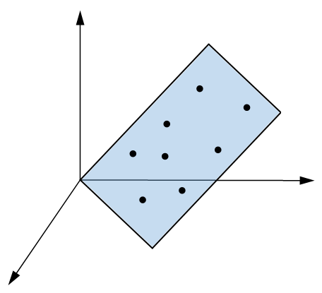
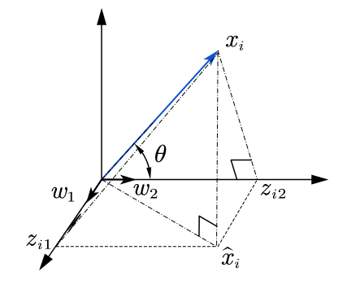

主成分分析
问题描述
主成分分析主要应用于降维。如下图所示，若干三维空间的点都落在同一平面上，那么我们就可以使用二维坐标来表示它们，而无需三维，这就是降维。

由于本文是讨论如何建模，有较多的数学抽象，初识主成分分析的朋友可以先看看这篇文章的前半部分以获得感性的认识再继续往下看。
降维可以描述如下：设
为第$i$个样本，其为$n$维列向量，而
为有$m$个样本的样本空间。当样本点$x_i$的维数很高时，这些数据样本在$n$维空间的分布通常是稀疏的，这些$n$维样本实际可能只属于一个低维的子空间，如属于某个$d$维子空间（$d < n$）。
问题建模

如上图所示，假设$n$维样本点$x_i$投影到$d$维子空间的投影点为$\hat{x_i}$，$d$维子空间的一组标准正交基为$w_1, w_2,…,w_d$，其中
以$w_1,w_2,…,w_d$为列的矩阵记为
由于$W$由标准正交基组成，则$W^TW=E$，$E$为$d$阶单位矩阵。有了标准正交基，我们就可以将$\hat{x_i}$表示如下：
其中，
为$\hat{x_i}$在基$w_1,w_2,…,w_d$下的坐标，其第$j$个坐标就是$x_i$在$w_j$上的投影zij，它的值为$x_i$和$w_j$的内积，即zij $=w_j^Tx_i$（$j=1,..,d$）。或者我们可以不用向量相乘的表示方式，而用高中的知识，内积zij $= x_i \cdot w_j = |x_i||w_j|cos\theta$，如下图所示。
在知道了原样本投影到子空间的坐标后，我们便可以建立模型了。我们的目标是降维后的值与原样本值的误差尽可能小，那么也就是两者在空间上的坐标要尽可能地近。即目标函数为：
这个形式不利于求解，我们需要进一步处理，使用矩阵形式表达。为了下面计算的方便，我们对$\hat{x_i} = Wz_i$方程两边同时右乘一个$W^T$，又$W^TW=E$，得
因此，
由于$x_i$均为给定的样本点，所以$x_i^Tx_i$为常数，于是
其中$C$为常数。为了进一步的简化矩阵的表达，我们注意到对于一个列向量$S_i$有这样的性质：$S_i^TS_i=tr(S_iS_i^T)$，其中$tr()$表示对矩阵的对角线求和。那么
其中$S=[S_1,S_2,…,S_m]$为以$S_1,S_2,…,S_m$为列的矩阵。令$S_i=z_i=W^Tx_i$，则有$S=W^TX$，
我们要
也就是要
于是主成分分析的数学模型为
本博客所有文章除特别声明外，均采用 CC BY-SA 4.0 协议 ，转载请注明出处！